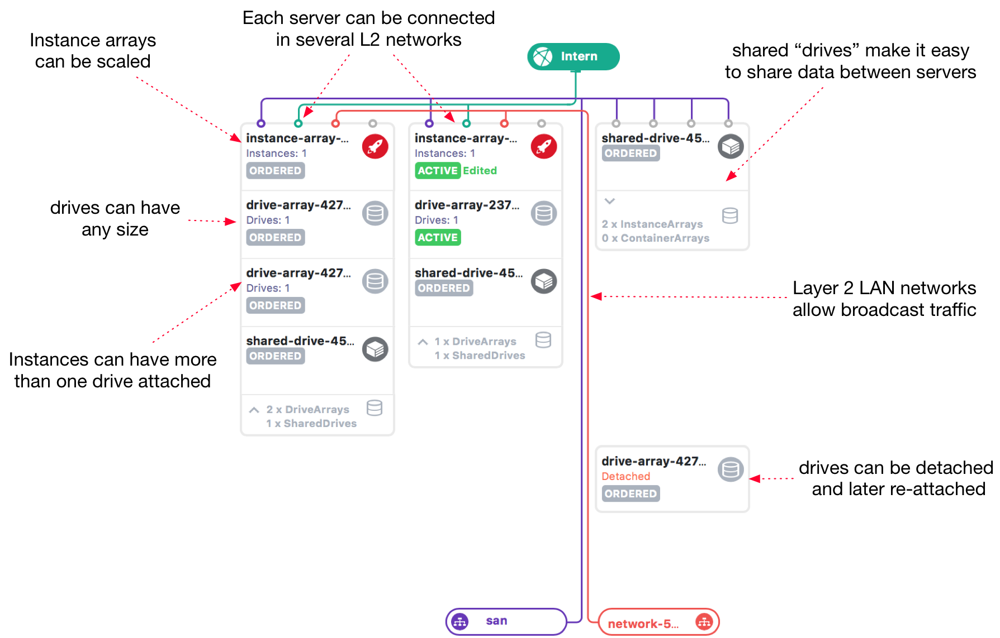
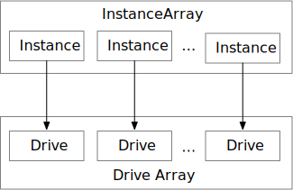
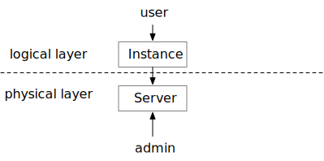
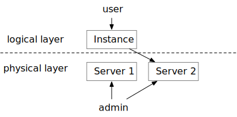
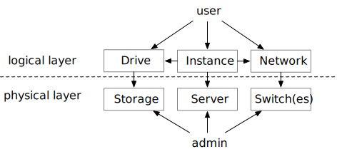

Introduction¶
The Bigstep Metalcloud is an IaaS service focused on offering low latency and high performance compute and storage services. The service offers the same level of flexibility that is typical from a cloud provider but using only bare metal:
- Instant Provisioning
- Stop-and-resume
- Upgrades and downgrades
- Quick hardware change
- Variable storage size
Important concepts¶
A typical user infrastructre architecture would look similar to this:

This is a screenshot from our UI but the infrastructure could be created using the CLI, the Terraform provider, programatically via the SDKs etc.
A user would create one or more Instance Arrays in an infrastructure and connect them with one or more Networks.
- An infrastructure groups servers, storages, IPs etc that are needed for a particular “project”.
- An InstanceArray is a cluster of similar servers groupped together.
- A Network is a dedicated Layer 2 broadcast domain
Instance Arrays and Drive Arrays¶
Multiple Instances are grouped together in Instance Arrays. An Instance Array can be “resized” which means the same “InstanceArray-wide” settings will apply to the new instances. This is helpful for managing application clusters.
An InstanceArray can be connected to a DriveArray which in turn groups Drives. Each Instance will get an associated Drive.
The separation betwen storage and compute enables Instance Arrays to be suspended and then resumed later, hardware can be changed with a reboot etc.

Infrastructures¶
An infrastructure is mode than a collection of Instances and Drives. It also instructs our systems to segregate everything from a security perspective. For example Layer 2 broadcast domains (Networks) cannot span infrastructures.
Servers and Instances¶
Instances are logical-level concepts. Behind each Instance there is a Server but which particular one is of no importance to the user. The server can be swapped with another while the Instance’s properties such as access credentials, DNS records etc are preserved.

The mapping between an instance and a server is done at “provisioning” time and is created when the user “requests” a compute resource. An instance can be mapped to another server if the user needs more resources or needs a replacement.

Instances have associated “Drives” and “Networks”. Drives can be moved across storages and Networks typically span multiple switches.

Instances can be “stopped” which will release the server to the pool but will keep all other configurations such as server type, network, OS, firewall configurations etc.
The Metalcloud supports installing the OS on a local drive. When releasing the server associated with an instance the content of all local drives will be wiped.